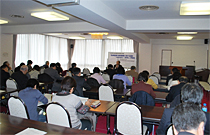

監事監査の環境整備に関する指針～地域生協向け～研修会報告
- 【日 時】
- 12月2日(金)10:30～12:00
- 【場 所】
- さいたま市民会館うらわ503･505集会室
- 【参加者】
- 39人
■概 要 講師：宮部 好広氏(日本生協連法規会計支援室室長)

今回の指針は、理事サイドに向けた資料としてまとめられていること、｢生協のガバナンスと理事・監事の職責｣｢監事の職務と環境整備の意義｣｢監事会｣｢監事監査の環境整備の基本的な進め方｣の基本的な考え方を説明しました。次に監事体制等とその他の監査環境の問題に関しての具体的な指針の報告がありました。
1．監事体制等
（1）監事会：監事からの要請を受けて、定款に監事会の規定を設けることを検討すること。
（2）監事構成：「組合員による監査」「法律・会計・経営という3つの専門性を備えた監査」の両立という観点に基づき、監事からの要請を受けて監事構成に関する合意形成を進め、上記の専門性を有する監事候補の人選等に協力すること。
（3）常勤監事：負債総額200億円を超える法定の常勤監事設置生協のほか、負債総額50億円以上の生協においても、監事からの要請を受けて常勤監事の設置を図ること等。
（4）選出方法：監事からの要請を受けて常勤監事の設置を図ること。県内で事業高が最大の生協では、監事からの要請を受けて、常勤的な働きを想定する監事の配置について積極的に検討すること。
（5）監事報酬：理事報酬も含めた役員報酬全体の体系の中で総合的に検討すること。弁護士、公認会計士等に監事に就任いただく場合には､社会的な報酬水準に留意すること。
（6）監事スタッフ
 常勤監事を設置していない場合には、監事からの要請を受けて、監事スタッフを配置すること。常勤監事を設置している場合には、監事からの要請を受けて、監事スタッフの配置について検討すること。
常勤監事を設置していない場合には、監事からの要請を受けて、監事スタッフを配置すること。常勤監事を設置している場合には、監事からの要請を受けて、監事スタッフの配置について検討すること。
 監事スタッフは専任が望ましい。生協の規模などとの関係で兼任とする場合には、監事スタッフの独立性の観点から、監事スタッフ業務に関する監事の業務指揮権を保障することとともに、人事異動・人事評価についてはあらかじめ監事の同意を得ること。
監事スタッフは専任が望ましい。生協の規模などとの関係で兼任とする場合には、監事スタッフの独立性の観点から、監事スタッフ業務に関する監事の業務指揮権を保障することとともに、人事異動・人事評価についてはあらかじめ監事の同意を得ること。
2．その他の監査環境
代表理事との定期的な会合、重要な会議への出席、監事への報告体制、監査費用、内部監査等の連携、公認会計士等との連携を図ることが適切です。